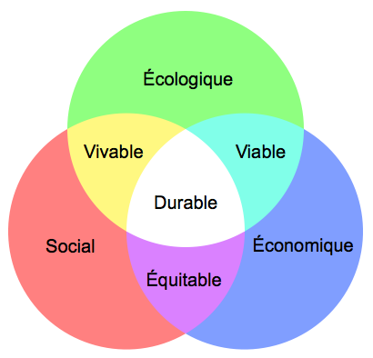

Qu'est ce que le Développement Durable ?
Le développement durable a pour but de répondre aux besoins du présent sans compromettre les besoins des générations futures. Deux idées sont attribuées à cette notion : l'idée du besoin et l'idée de ne pas endommager l'environnement plus que nécessaire. En France, selon l'AFNOR (L’Association française de normalisation) le développement durable est un état où « les composantes de l'écosystème et leurs fonctions sont préservées pour les générations présentes et futures ». Le développement durable est un équilibre entre les besoins et la destruction de la nature face à la crise écologique mondiale (réchauffement climatique, raréfaction des ressources naturelles, sécurité alimentaire, déforestation et perte drastique de biodiversité, catastrophes naturelles et industrielles). Il s'agit aussi, en s'appuyant sur de nouvelles valeurs universelles (responsabilité, participation écologique et partage, principe de précaution, débat) d'affirmer une approche double : dans le temps : nous avons le droit d’utiliser les ressources de la Terre, mais le devoir d'en assurer la pérennité pour les générations futures ; dans l’espace : chaque humain a le même droit aux ressources naturelles de la Terre. Tous les secteurs d'activités sont concernés par le développement durable : l'agriculture, l'industrie, l'habitat, l'organisation familiale, mais aussi les services (finance, tourisme…). Plus simplement, le développement durable est un mode de développement qui a pour but de répondre aux besoins de tous sans dégrader l'environnement. Pour conclure le développement durable veut aussi limiter la consommation des énergies fossiles en la remplaçant par des énergies renouvelables. Dont voici les principales :
